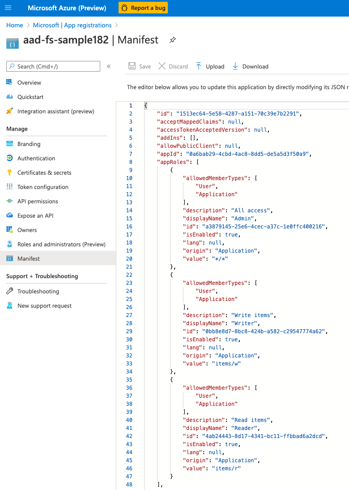
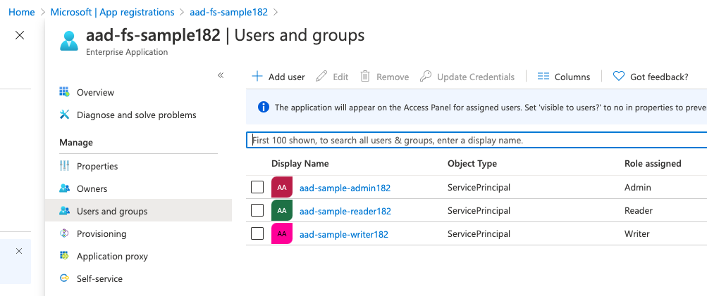

The sample
The example implements authorization using Azure Application Roles. The sample application can be found in your Azure Active Directory once provisioned:
dotnet fake build -t registerSample
For simplicity, the sample uses service principals as identities for the Requesting Party. The registration creates following items in the AD:
aad-sample-adminservice principal (Requesting Party)aad-sample-readerservice principal (Requesting Party)aad-sample-writerservice principal (Requesting Party)aad-fs-sampleapplication (Resource Server) and corresponging Enterprise Application to manage application role assignments
Note: All the identitifiers will have a random suffix added.
aad-sample will have following AppRoles defined:
Adminwith*/*valueReaderwithitems/rvalueWriterwithitems/wvalue
Once provisioned you can find these roles in the application's manifest, it will look something like this: 
Requesting Party service principals will have the corresponding roles assigned, which you can check in the Enterprise Application's Users and Groups blade:

Authoring the roles
The role values can be anything you need. The example here demonstrates the capability of the library to deal with patterns and wildcards:
A "pattern" means that we can expect a structure in the value, like "items/r" or "items.r" - / is the default separator, but the character is configurable - use PartProtector.mkNew instead of mkDefault if you need to change it.
Use * wildcard in any segment of the role value to make any demand match that part of the pattern, for example items/* in the role value will match the demands like items/r, items/w, etc.
*/* means that the identity with that claim in the token will have access to APIs that demand items, fiddles/play, cats/herd, etc with or w/o any 2nd (verb) segment.
Complex demands can be expressed by combining the patterns with Any and All, for example:
All [Pattern ["A";"1"]; Pattern ["B";"2"]]will only match if bothA/1andB/2are present among the token claims.
Implementing Resource Server
The full source code for this sample is in AAD.tasks.Test/ResourceServers.fs, but here are the important ingredients:
1: 2: 3: 4: 5: 6: 7: 8: 9: 10: 11: 12: 13: 14: 15: 16: 17: 18: 19: 20: |
|
As you can see:
- all the tokens that
protectorhandles are issued for a specificaudience- ouraad-fs-sample - the functions that return the demands for a given handler are asynchronous to facilitate potential IO based on the context of the request.
readHttpHandler demands access with a token that has a claim in one of [role,rolesorscp] that matches the pattern "items/r"writeHttpHandler demands access with a token that has a claim that matches the pattern "items/w"
And as mentioned above, Admin with its */* value will meet both of those demands.
Requesting the token
On the Requesting Party side, we need to tell the AD that we need the appRoles assigned to our principals mapped to the token claims.
We do that by specifying our Application URI as a scope, in case of the registerd sample it will look something like: api://{clientid}/.default, where the /.default suffix is a special identifier that tells AD to figure which role(s) the user has in the application instead of requsting one specific role.
The samples use MSAL to obtain and refresh the token as needed.
Passing the token with a call
Considering that the token is refreshed periodically, AsyncRequestor or TaskRequestor can be useful to ensure a token is obtained and associated it with each request.
namespace FSharp
--------------------
namespace Microsoft.FSharp
namespace FSharp.Control
--------------------
namespace Microsoft.FSharp.Control
type HttpClient =
inherit HttpMessageInvoker
new : unit -> HttpClient + 2 overloads
member BaseAddress : Uri with get, set
member CancelPendingRequests : unit -> unit
member DefaultRequestHeaders : HttpRequestHeaders
member DefaultRequestVersion : Version with get, set
member DeleteAsync : requestUri:string -> Task<HttpResponseMessage> + 3 overloads
member GetAsync : requestUri:string -> Task<HttpResponseMessage> + 7 overloads
member GetByteArrayAsync : requestUri:string -> Task<byte[]> + 1 overload
member GetStreamAsync : requestUri:string -> Task<Stream> + 1 overload
member GetStringAsync : requestUri:string -> Task<string> + 1 overload
...
--------------------
Net.Http.HttpClient() : Net.Http.HttpClient
Net.Http.HttpClient(handler: Net.Http.HttpMessageHandler) : Net.Http.HttpClient
Net.Http.HttpClient(handler: Net.Http.HttpMessageHandler, disposeHandler: bool) : Net.Http.HttpClient
type Uri =
new : uriString:string -> Uri + 5 overloads
member AbsolutePath : string
member AbsoluteUri : string
member Authority : string
member DnsSafeHost : string
member Equals : comparand:obj -> bool
member Fragment : string
member GetComponents : components:UriComponents * format:UriFormat -> string
member GetHashCode : unit -> int
member GetLeftPart : part:UriPartial -> string
...
--------------------
Uri(uriString: string) : Uri
Uri(uriString: string, uriKind: UriKind) : Uri
Uri(baseUri: Uri, relativeUri: string) : Uri
Uri(baseUri: Uri, relativeUri: Uri) : Uri
module PartProtector
from AAD
--------------------
from Giraffe.HttpStatusCodeHandlers
from Giraffe.HttpStatusCodeHandlers